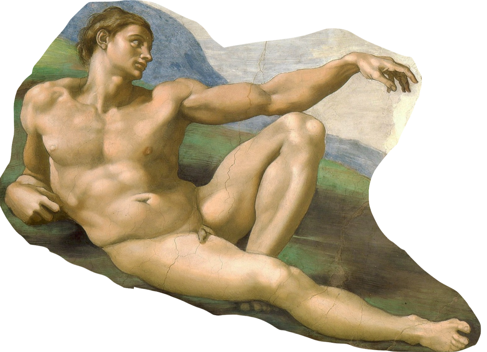
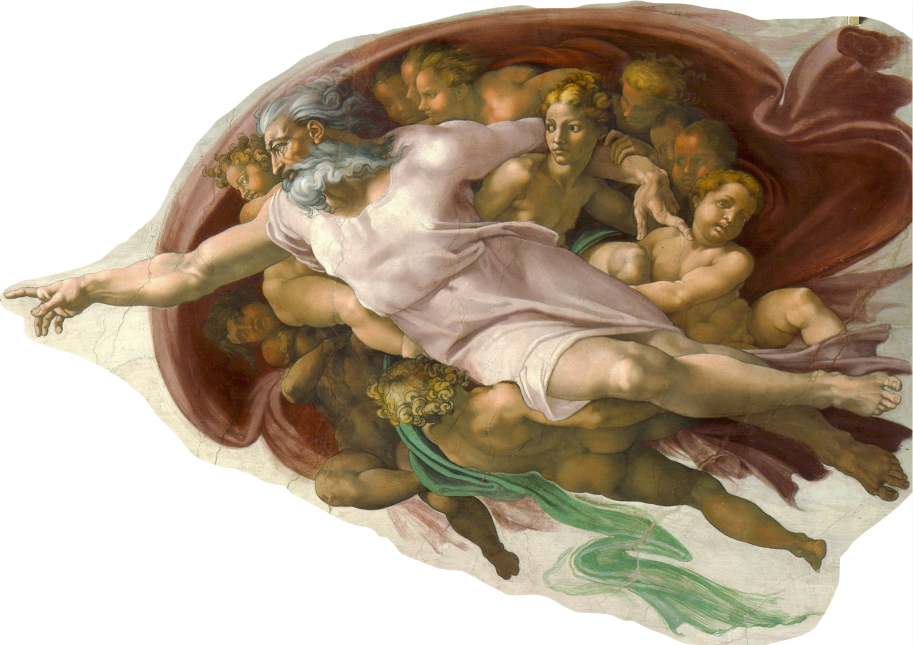

The problem: health data scatters across apps, labs and letters, retold from memory.
Our solution: Jule tells it once, as one timeline, for both sides of the doctor's desk.
Starts with menopause. Built to scale to more conditions, for women and men.

